Mesmos dados do print atual. Cada proposta em pane largo (1200 px) e em 60 colunas (432 px), nos temas claro e escuro. O desenho real é feito pelo mod com a mesma estimativa de largura de texto; o navegador pinta com outra fonte, então a referência final é o app.
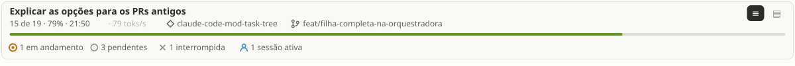
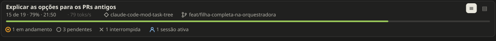
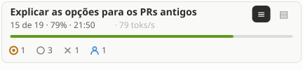
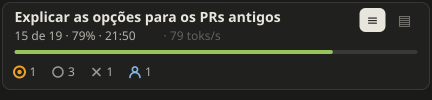
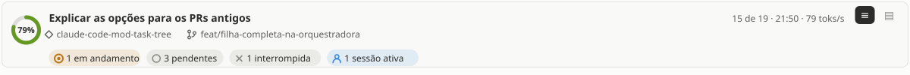
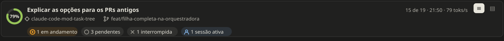
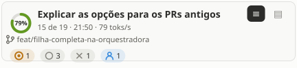
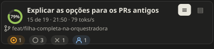
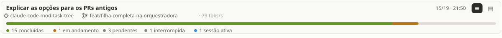
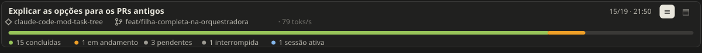
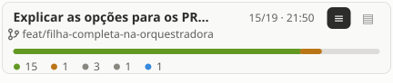
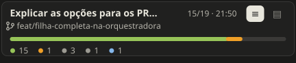
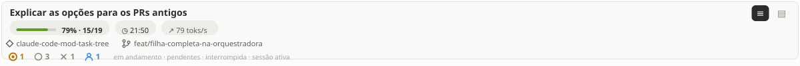
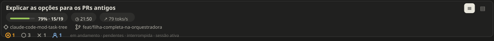
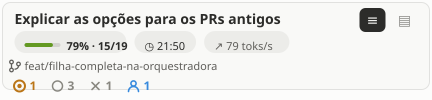
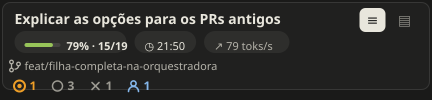
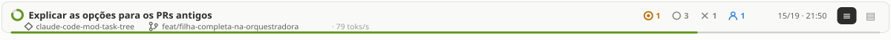
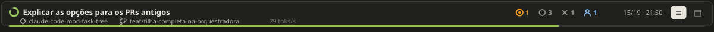
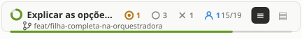
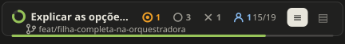
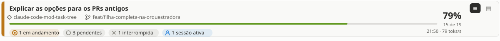
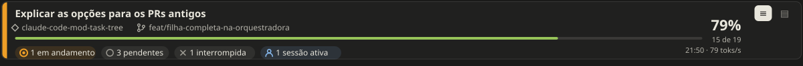
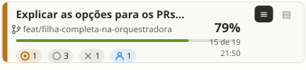
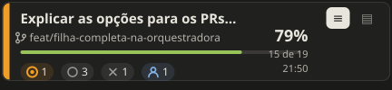